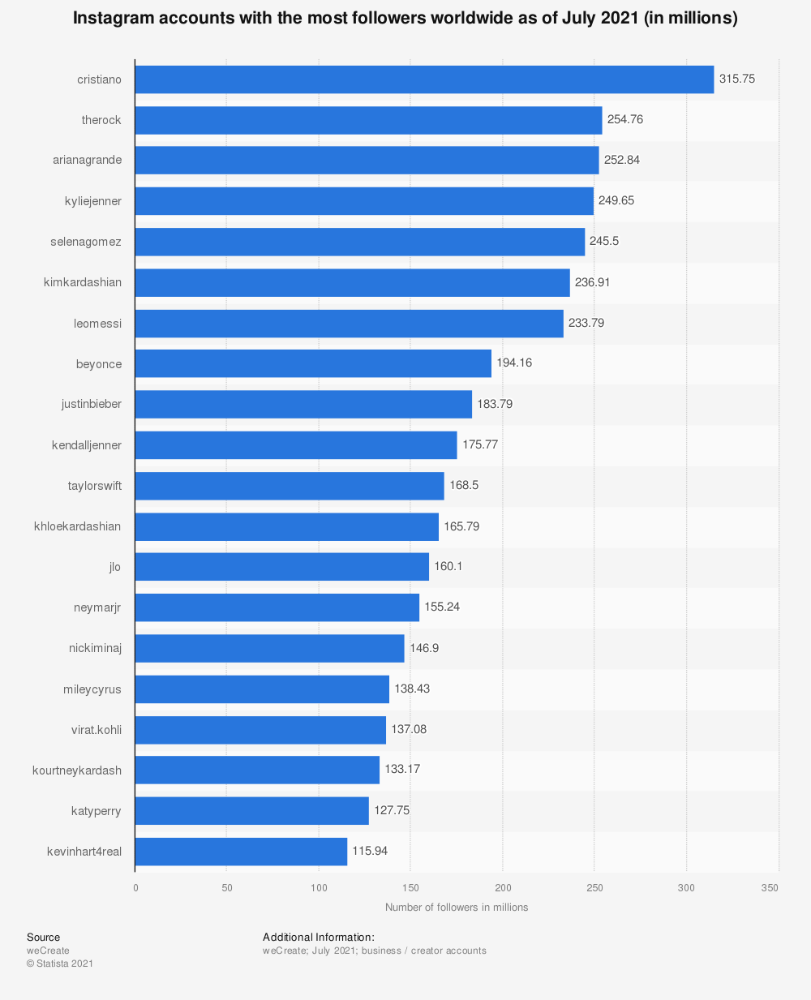

1,386 milliard d’utilisateurs actifs mensuels en 2021 (MAU).
Plus de 500 millions d’utilisateurs actifs quotidiens en 2019 (DAU).
88 % de l’audience d’Instagram est domiciliée en dehors des États-Unis (2020).
Instagram fait partie du cercle très fermé des réseaux sociaux utilisé par plus d’un milliard de personnes chaque mois. À noter également : à travers le monde, plus de 500 millions de personnes accèdent à Instagram tous les jours.
Toutes les statistiques d'Instagram :
Plus de 500 millions de comptes utilisent les Stories Instagram chaque jour
Plus de 50 milliards de photos ont été partagées sur Instagram depuis son lancement en 2010,
Instagram représente le 6e site web le plus visité et la 9e requête Google la plus populaire,
Le Kazakhstan est le pays qui présente la plus forte audience sur Instagram avec 78,7 % de sa population, devant Brunéi (70,5 %) et la Turquie (68,4 %),
Plus de 100 millions de photos et de vidéos sont publiées au quotidien sur Instagram,
Les Instagrammers passent en moyenne 30 minutes sur la plateforme par jour (+13,8 %),
4,2 milliards de likes sont comptabilisés chaque jour,
51 % des Instagrammers sont des hommes, 49 % sont des femmes,
33,1 % des internautes entre 25 et 34 ans et 29,6 % de ceux âgés de 18 à 24 ans utilisent le plus Instagram,
63 % des utilisateurs d’Instagram l’utilisent chaque jour,
81 % des utilisateurs déclarent utiliser Instagram pour découvrir de nouveaux produits et services,
Plus de 200 millions d’Instagrammers consultent au moins un profil de marque ou d’entreprise tous les jours,
Personnes ayant le plus d'abonné :

Les 10 hashtags les plus utilisés sur Instagram
1. #Love (2 milliard de publications)
2. #Instagood (1,276 milliards de publications)
3. #Fashion (908 millions de publications)
4. #Photooftheday (879 millions de publications)
5. #Art (746 millions de publications)
6. #Beautiful (714 millions de publications)
7. #Photography (693 millions de publications)
8. #Picoftheday (623 millions de publications)
9. #Follow (617 millions de publications)
10. #Happy (615 millions de publications)
Top des 10 villes et monuments les plus instagrammés dans le monde
1. Miami, aux Etats-Unis (7 millions)
2. Walt Disney World, aux Etats-Unis (5,9 millions)
3. La Tour Eiffel, en France (5,6 millions)
4. Le Boulevard de Las Vegas, aux Etats-Unis (4,7 millions)
5. Times Square, aux Etats-Unis (3,8 millions)
6. Disneyland Paris, en France (3,6 millions)
7. Le Gratte-ciel Burj Khalifa, aux Emirats Arabes Unis (3,2 millions)